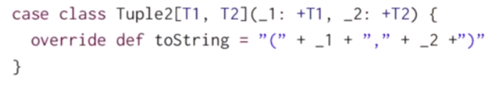
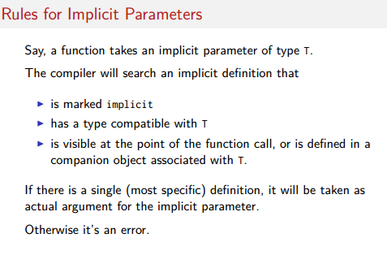
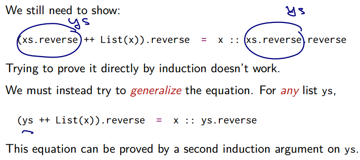

5.1 - More Functions on Lists
already known methods:
xs.head xs.tail
sublist and ele access:
xs.lengthxs.lastxs.init: all elementh except last elementxs.take(n): sublist of first n elementsxs.drop(n): the rest of list after taking first n elementsxs(n): =xs.apply(n), element at index n
More methods:
- concatenation:
xs ++ ys(:::is legacy usage) xs.reversexs.updated(n,x): return a same list, except xs(n)=x (Note: Lists are immutable, so cannot modify)xs.indexOf(x): index or -1xs.contains(x): same asxs.indexOf(x)>=0
complexity:
head, tail: simple to implement
⇒ complexity of last?
def last[T](xs: List[T]): T = xs match{
case List() => throw new Error("last of Nil")
case List(x) => x
case y::ys => last(ys)
}
⇒ complexity of last = O(n)
implement init:
def init[T](xs: List[T]): T = xs match{
case List() => throw new Error("init of Nil")
case List(x) => List()
case y::ys => y::init(ys)
}
⇒ complexity = O(length of xs)
implement concatenation :::/++
(NB: ::: is right-associative, xs:::ys = ys. :::(xs). )
def concat[T](xs: List[T], ys: List[T]) = xs match{
case List() => ys
case z::zs => x:concat(xs, ys)
}
⇒ complexity of concat = O(length of xs)
implement of reverse
def reverse[T](xs: List[T]) = xs match{
case List() => List()
case y::ys => reverse(ys) ++ y
}
⇒ complexity of reverse: every call contains a concat, thus complexity=O(n2)
exercice: remove nth element:
def removeAt[T](n:Int, xs: List[T]): List[T] = (xs take n ) ++ (xs drop n+1)
5.2 - Pairs and Tuples
example: sort list faster than insertion sort → merge sort.
sort 2 sublist, merge them ⇒ list is sorted
def msort(xs: List[Int]): List[Int] = {
val n = xs.length/2
if(n==0) xs
else{
def merge(xs: List[Int], ys: List[Int]) = ... // see below
val (fst, snd) = x splitAt n // splitAt returns 2 sublists
merge(msort(fst), msort(snd))
}
}
merge:
def merge(xs: List[Int], ys: List[Int]): List[Int] = xs match {
case Nil => ys
case x::zs => match ys{
case Nil => xs
case y::ws => {
if(x<y) x::merge(zs, ys)
else y::merge(xs, ws)
}
}
}
Pair/Tuple
written as (x, y) in scala. pair can be used as patterns : similar for tuples.
val pair = ("a", 2)
val (label, value) = pair
tuple implementation:

⇒ can use _1 _2 to access elements
exercice: rewrite the merge function using a pattern matching over pairs:
def merge(xs: List[Int], ys: List[Int]): List[Int] =
(xs, ys) match {
case (Nil, ys) => ys
case (xs, Nil) => xs
case (x:zs, y:ws) =>
if(x<y) x::merge(zs, ys)
else y::merge(xs, ws)
}
5.3 - Implicit Parameters
pb: how to apply msort to list of other element types.
using type parameters ? msort[T]⇒ the compare operator is not always defined !
⇒ pass the lt function as a parameter:
def msort[T](xs: List[T])(lt: (T,T)=>Boolean) = ...
another option: scala.math.Ordering[T]
impor math.Ordering def msort[T](xs: List[T])(ord: Ordering) = ...// use ord.lt(x,y) msort(nums)(Ordering.Int)
pb: pass each time the function parameter is cumbersome... ⇒ use implicite parameters
def msort[T](xs: List[T])(implicite ord: Ordering) = ...// use ord.lt(x,y)
⇒ the function calls can ignore the implicite parameter, the compiler will figure it out.

5.4 - Higher-Order List Functions
functions over list have similar pattern:
- transform each element
- retrive elements that satisfy some cretirion
- combing elements using an operator
map
apply an operation to every elements.
abstract class List[T]{
def map[U](f: T=>U): List[U] = this match {
case Nil => this
case x:xs => f(x)::xs.map(f)
}
}
filtering
def filter(p: T=>Boolean): List[T] = this match {
case Nil => this
case x:xs => f(p(x)) x::xs.filter(p) else xs.filter(p)
}
other methods that extracts sublist:

exercice: implement a function pack:

def pack[T](xs: List[T]): List[List[T]] = xs match {
case Nil => Nil
case x::ys => {
val (head, tail) = xs span (c => c==x)
head :: pack(tail)
}
}
exercice2: implement a function encode:

def encode[T](xs: List[T]): List[(T, Int)] = xs match {
case Nil => Nil
case x::ys => {
val (head, tail) = xs span (c => c==x)
(x, head.length) :: pack(tail)
}
}
another version: use the pack:
def encode[T](xs: List[T]): List[(T, Int)] =
pack(xs) map (l => (l.head, l.length))
5.5 - Reduction of Lists
fold/reduce: combine elements using an operator.
reduceLeft
(can apply only to non-empty lists) inserts a binary operator between adj elements:
ex.
def sum(xs: List[Int]) = (0::xs) reduceLeft ( (x,y)=> x+y) def prod(xs: List[Int]) = (1::xs) reduceLeft ( (x,y)=> x*y)
write shorter function values using underscore _: every _ represents a new parameter
def sum(xs: List[Int]) = (0::xs) reduceLeft ( _+_ ) def prod(xs: List[Int]) = (1::xs) reduceLeft ( _*_ )
foldLeft
foldLeft is like reduceLeft, but can apply on Nil, and takes an accumulator z => returns z when calling on Nil.
def sum(xs: List[Int]) = (xs foldleft 0) ( _+_ ) def prod(xs: List[Int]) = (xs foldleft 1) ( _*_ )
foldRight/reduceRight
dual functions to foldLeft and reduceLeft, but produce a tree leaned to right

if the operation is associative and communitive, foldLeft and foldRight should give same results. Other times need to think.
ex. concat
 if apply foldLeft ⇒ type error, because the
if apply foldLeft ⇒ type error, because the :: operator will be applied to 2 elements of type T.
5.6 - Reasoning About Concat
proof of programs
structural induction
pb: prove some properties of concat:

类似数学归纳法:

ex. prove (xs ++ ys) ++ zs = xs ++ (ys ++ zs): induction on xs
def concat[T](xs: List[T], ys: List[T]) = xs match{
case Nil => ys
case z::zs => x:concat(xs, ys)
}
- base case:
xs=Nil
(Nil ++ ys ) ++ zs = Nil ++ (ys ++ zs)
- induction step:
x::xs

5.7 - A Larger Equational Proof on Lists
pb: want to prove that xs.reverse.revese == xs
- base case:
Nil.reverse.revers = Nil - induction step
pb: cannot advance ⇒ generalize the argument.


Comments !